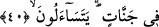
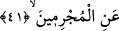
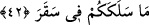

39. Ancak sağdakiler başka.
Bu ifâde yukarda geçen “her nefis” ifâdesinden istisnâ edilmiştir. Sağdakiler anlamına
gelen “ashabu’l-yemiyn” mümin olanlardan sâlih amel işleyenlerdir. Yâni onlar -
borcuna karşılık rehin veren kimsenin borcunu ödemek sûretiyle verdiği rehnini
kurtardığı gibi- güzel ameller işleyerek boyunlarını azaptan kurtaran kimselerdir.
Kâşânî bu âyetleri şöyle anlıyor: Her nefis amelleriyle Allah’ın katında rehindir,
amellerinin ondan ayrılması mümkün değildir. Çünkü amellerinin hey’eti kendilerini
kuşatmıştır. Fiillerinin etkileri üzerlerindedir ve amelleriyle fiilleri kendilerini asla
bırakmaz. Bu amellerin onlardan ayrılması mümkün değildir. Ancak cesedi
hey’etlerinden soyulup sıyrılan fıtrat makamını elde eden ve böylece boyunlarını rehin
olmaktan kurtaran mutlu “ashabu’l-yemiyn” böyle değildir.
40. Onlar cennetler içindedir sorarlar;
Burada sanki şöyle gizli bir soru vardır: Sağdakilerin durumu nasıl olacaktır. İşte bu
soruya âyette: “Onlar cennettedirler”. Cennât kelimesinin elif-lamsız nekre gelmesinin
işâret ettiği üzere o cennetler öyle güzeldir ki gerçek mâhiyeti anlaşılmaz, nitelikleri
vasfedilemez. Cennet kelimesinin çoğul olarak zikredilmesinden maksad ise,
müminlerden her birinin o cennetlerden birisine nâil olacağını ifâde etmek içindir.
41. Günahkârlara uzaktan uzağa
Arapçada “tefaul” vezni/kalıbı “işteşlik” anlamına geldiği gibi burada olduğu üzere
normal düz anlama da gelir. İşte burada âyetin mânâsı “karşılıklı soruyorlar” şeklinde
değil de sâdece “soruyorlar” şeklindedir. Buna göre âyetin mânâsı; onlar günahkârlara
hâllerini sorarlar demektir. Âyette -görüleceği üzere- soruya muhatap olanlar
hazfolunmuşlardır. Çünkü onlarla sorulan şey aynıdır ve âyetin devamı bunların kim
olduğunu göstermektedir.
42. Sizi şu yakıcı ateşe sokan nedir?
Rivâyete göre Allah Teâlâ cennetlikler cennette iken günahkârları onların gözleri
önüne getirir. Onlar cehennemlikleri cehennemde iken görüp dururlar ve hâllerini
sorarlar: “Sizi şu sekara sokan nedir?” Âyette yer alan “seleke” kelimesi “gitmek”